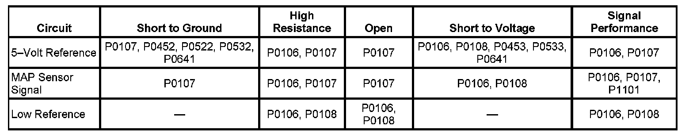
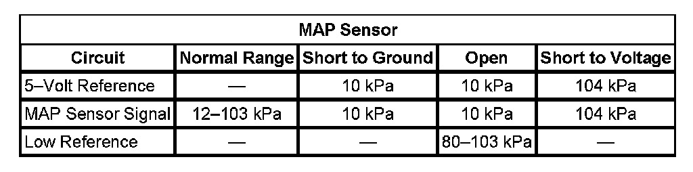
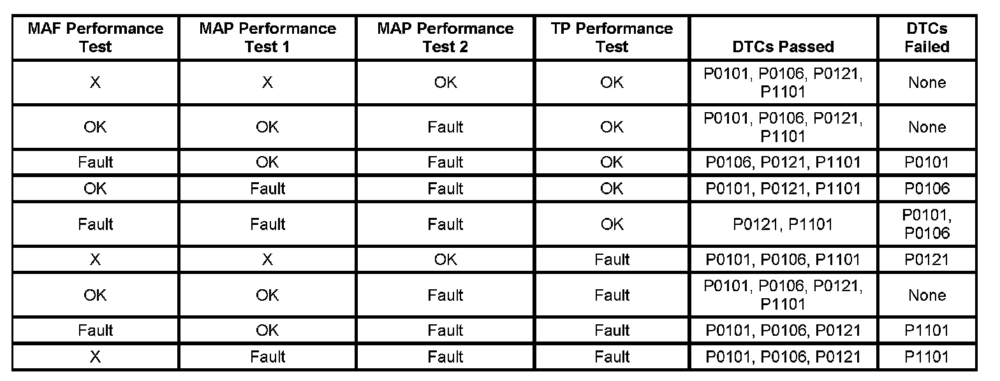

P0106
DTC P0106
DIAGNOSTIC INSTRUCTIONS
- Perform the Diagnostic System Check - Vehicle prior to using this diagnostic procedure. Initial Inspection and Diagnostic Overview
- Strategy Based Diagnosis
- Diagnostic Procedure Instructions.
DTC DESCRIPTOR
DTC P0106
Manifold Absolute Pressure (MAP) Sensor Performance

DIAGNOSTIC FAULT INFORMATION
TYPICAL SCAN TOOL DATA
MAP Sensor:

CIRCUIT DESCRIPTION
The intake flow rationality diagnostic provides the within-range rationality check for the mass air flow (MAF), manifold absolute pressure (MAP), and the throttle position (TP) sensors. This is an explicit model-based diagnostic containing 4 separate models for the intake system.
- The throttle model describes the flow through the throttle body and is used to estimate the MAF through the throttle body as a function of barometric pressure (BARO), TP, intake air temperature (IAT), and estimated MAP. The information from this model is displayed on the scan tool as the MAF Performance Test parameter.
- The first intake manifold model describes the intake manifold and is used to estimate MAP as a function of the MAF into the manifold from the throttle body and the MAF out of the manifold caused by engine pumping. The flow into the manifold from the throttle uses the MAF estimate calculated from the above throttle model. The information from this model is displayed on the scan tool as the MAP Performance Test 1 parameter.
- The second intake manifold model is identical to the first intake manifold model except that the MAF sensor measurement is used instead of the throttle model estimate for the throttle air input. The information from this model is displayed on the scan tool as the MAP Performance Test 2 parameter.
- The fourth model is created from the combination and additional calculations of the throttle model and the first intake manifold model. The information from this model is displayed on the scan tool as the TP Performance Test parameter.

The estimates of MAF and MAP obtained from this system of models and calculations are then compared to the actual measured values from the MAF, MAP, and the TP sensors and to each other to determine the appropriate DTC to fail. The table illustrates the possible failure combinations and the resulting DTC or DTCs.
CONDITIONS FOR RUNNING THE DTC
- DTCs P0102, P0103, P0107, P0108, P0112, P0113, P0116, P0117, P0118, P0128, P0335, P0336 are not set.
- The engine speed is between 450-8,000 RPM.
- The IAT Sensor parameter is between -7 and +125°C (+19 and 257°F).
- The ECT Sensor parameter is between 70-125°C (158-257°F).
- This DTC runs continuously within the enabling conditions.
CONDITIONS FOR SETTING THE DTC
The engine control module (ECM) detects that the MAP sensor pressure is not within range of the calculated pressure that is derived from the system of models for more than 0.5 second.
ACTION TAKEN WHEN THE DTC SETS
DTC P0106 is a Type B DTC.
CONDITIONS FOR CLEARING THE MIL/DTC
DTC P0106 is a Type B DTC.
DIAGNOSTIC AIDS
IMPORTANT: Verify that the engine is in good mechanical condition before continuing with this diagnostic.
- Verify the integrity of the air induction system by inspecting for the following conditions:
- Any damaged components
- Loose or improper installation
- Improperly routed vacuum hoses
- Any vacuum leak
- Any type of restriction
- MAP sensor seal that is missing or damaged
- Verify that restrictions d-not exist in the MAP sensor vacuum source.
- Verify that restrictions d-not exist in the exhaust system. Refer to Restricted Exhaust. Restricted Exhaust
- A skewed or stuck engine coolant temperature (ECT) or IAT sensor will cause the calculated models to be inaccurate and may cause this DTC to run when it should not. Refer to Temperature Versus Resistance.
- The BARO that is used by the ECM to calculate the air flow models is initially based on the MAP sensor at ignition ON. When the engine is running, the ECM will continually update the BARO value near wide open throttle using the MAP sensor and a calculation. A skewed MAP sensor will cause the BARO value to be inaccurate. Use the scan tool and compare the BARO parameter at ignition ON to the Altitude vs. Barometric Pressure Table. Refer to Altitude Versus Barometric Pressure.
- A skewed MAP sensor will also cause the first and second intake manifold models to disagree with the actual MAP sensor measurements. Use the scan tool and compare the MAP Sensor parameter to a known good vehicle, under various operating conditions.
- Inspect for the following conditions:
- Incorrect CAM timing
- Worn piston rings-Refer to Engine Compression Test. Testing and Inspection
CIRCUIT/SYSTEM VERIFICATION
- The BARO that is used by the ECM to calculate the air flow models is initially based on the MAP sensor at ignition ON. When the engine is running, the ECM will continually update the BARO value near WOT using the MAP sensor and a calculation. A skewed MAP sensor will cause the BARO value to be inaccurate. Determine the current vehicle testing altitude. Ignition ON, observe the scan tool BARO Sensor parameter. Compare the parameter to the Altitude vs Barometric Pressure table. Refer to Altitude Versus Barometric Pressure.
- A skewed MAP sensor will also cause the first and second intake manifold models to disagree with the actual MAP sensor measurements. Use the scan tool and compare the MAP Sensor parameter to a known good vehicle under various operating conditions.
CIRCUIT/SYSTEM TESTING
IMPORTANT: All electrical components and accessories must be turned OFF and allowed to power down.
1. Ignition OFF, disconnect the MAP harness connector at the MAP sensor.
2. Ignition OFF, test for less than 5 ohms of resistance between the low reference circuit and ground.
- If greater than the specified value, test the low reference circuit for an open/high resistance. If the circuit tests normal, replace the ECM.
3. Ignition ON, test for 4.8-5.2 volts between the 5-volt reference circuit and ground.
- If less than the specified range, test the 5-volt reference circuit for a short to ground or an open/high resistance. If the circuit tests normal, replace the ECM.
- If greater than the specified range, test the 5-volt reference circuit for a short to voltage. If the circuit tests normal, replace the ECM.
4. Verify the scan tool MAP Sensor parameter is less than 12 kPa.
- If greater than the specified range, test the signal circuit for a short to voltage. If the circuit tests normal, replace the ECM.
5. Install a 3A fused jumper wire between the signal circuit and the 5-volt reference circuit. Verify the scan tool MAP Sensor parameter is greater than 103 kPa.
- If less than the specified range, test the signal circuit for a short to ground or an open/high resistance. If the circuit tests normal, replace the ECM.
6. If all circuits test normal, test or replace the MAP sensor.
COMPONENT TESTING
IMPORTANT: You must perform the Circuit/System Testing in order to verify the integrity of the MAP sensor circuits before proceeding with the Component Testing. Component Tests and General Diagnostics
1. Turn ON the ignition, with the engine OFF, and remove the MAP sensor.
2. Install a 3A fused jumper wire between the 5-volt reference circuit and the corresponding terminal of the MAP sensor.
3. Install a jumper wire between the low reference circuit of the MAP sensor and ground.
4. Install a jumper wire at the MAP sensor signal circuit.
5. Connect a DMM between the jumper wire from the MAP sensor signal circuit and ground.
6. Install the J 35555 to the MAP sensor vacuum port. Slowly apply vacuum to the sensor while observing the voltage on the DMM. The voltage should vary between 0-5.2 volts without any spikes or dropouts.
- If the voltage is not within the specified range or is erratic, replace the MAP sensor.
REPAIR INSTRUCTIONS
Perform the Diagnostic Repair Verification after completing the diagnostic procedure.
- Manifold Absolute Pressure Sensor Replacement
- Control Module References for ECM replacement, setup, and programming. Verification Tests